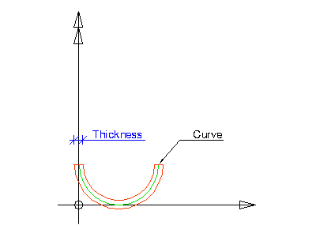

8.15.3.5 IfcCenterLineProfileDef
| Profildefinition mit Hilfe Mittellinie |
The profile IfcCenterLineProfileDef defines an arbitrary two-dimensional open, not self intersecting profile for the use within the swept solid geometry. It is given by an area defined by applying a constant thickness to a centerline, generating an area from which the solid can be constructed.
Among else, IfcCenterLineProfileDef is used to model cold-formed
steel or aluminium sections (Sigma, Zeta, Omega, and similar sections
which are not covered by subtypes of IfcParameterizedProfileDef).
However, since IfcCenterLineProfileDef does not provide shape parameters
except for the thickness, there is generally a need to further specify the
profile definition by means of
- the name,
- external reference to a document or library,
- profile properties,
or a combination of them. See IfcProfileDef for guidance on external references for profiles.
HISTORY New entity in IFC2x3.
Informal Propositions:
- The Curve has to be an open curve.
- The Curve has to be a non-intersecting curve.
Figure 358 illustrates the center line profile definition. The Curve is defined in the underlying coordinate system. The underlying coordinate system is defined by the swept surface that uses the profile definition. It is the xy plane of:
The Curve attribute defines a two dimensional open bounded curve. The Thickness attribute defines a constant thickness along the curve.
 |
Figure 358 — Centerline profile |
XSD Specification:
<xs:element name="IfcCenterLineProfileDef" type="ifc:IfcCenterLineProfileDef" substitutionGroup="ifc:IfcArbitraryOpenProfileDef" nillable="true"/>
<xs:complexType name="IfcCenterLineProfileDef">
<xs:complexContent>
<xs:extension base="ifc:IfcArbitraryOpenProfileDef">
<xs:attribute name="Thickness" type="ifc:IfcPositiveLengthMeasure" use="optional"/>
</xs:extension>
</xs:complexContent>
</xs:complexType>
EXPRESS Specification:
|
ENTITY IfcCenterLineProfileDef
|
 EXPRESS-G diagram
EXPRESS-G diagram
Attribute Definitions:
| Thickness | : |
Constant thickness applied along the center line.
|
Inheritance Graph:
|
ENTITY IfcCenterLineProfileDef
|
 Link to this page
Link to this page